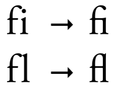

2.2 Different types of tokens
We can tokenize texts at a variety of units including:
- characters
- words
- sentences
- lines
- paragraphs
- n-grams
Let’s explore how tokenizers handle these.
sample_vector <- c("Far down in the forest",
"grew a pretty little fir-tree")
sample_tibble <- tibble(text = sample_vector)
tokenize_words(sample_vector)## [[1]]
## [1] "far" "down" "in" "the" "forest"
##
## [[2]]
## [1] "grew" "a" "pretty" "little" "fir" "tree"tidytext::unnest_tokens does the same thing, but in a different data structure. Under the hood, it uses paste0("tokenize_", token) from the tokenizers package.
## # A tibble: 11 × 1
## word
## <chr>
## 1 far
## 2 down
## 3 in
## 4 the
## 5 forest
## 6 grew
## 7 a
## 8 pretty
## 9 little
## 10 fir
## 11 treeYou can pass in arguments used in tokenize_words() through unnest_tokens() using …
## # A tibble: 12 × 1
## word
## <chr>
## 1 far
## 2 down
## 3 in
## 4 the
## 5 forest
## 6 grew
## 7 a
## 8 pretty
## 9 little
## 10 fir
## 11 -
## 12 tree2.2.1 Token type: Character
tokenize_characters() splits the text into letters. If strip_non_alphanum is TRUE, it strips all [:punct:] & [:whitespace:] before doing the the word boundaries.
tft_token_characters <- tokenize_characters(x = the_fir_tree,
lowercase = TRUE,
strip_non_alphanum = TRUE,
simplify = FALSE)
head(tft_token_characters) %>%
glimpse()## List of 6
## $ : chr [1:57] "f" "a" "r" "d" ...
## $ : chr [1:57] "r" "e" "s" "t" ...
## $ : chr [1:61] "w" "i" "s" "h" ...
## $ : chr [1:56] "a" "r" "o" "u" ...
## $ : chr [1:64] "l" "i" "t" "t" ...
## $ : chr [1:64] "t" "h" "e" "m" ...The same thing in unnest_tokens()
## # A tibble: 13,429 × 1
## word
## <chr>
## 1 f
## 2 a
## 3 r
## 4 d
## 5 o
## 6 w
## 7 n
## 8 i
## 9 n
## 10 t
## # … with 13,419 more rowsWatch out for ligatures!
Ligatures are when multiple letters are combined as a single character.
## [[1]]
## [1] "s" "t" "r" "a" "ß" "e"- Is it a meaningful feature to keep?
- Is is sylistic or functional?

“Wie trinken die Schweizer Bier? – In Massen.” (“How do the Swiss drink beer? – In mass” instead of other meaning if it had been written as “in Maßen”: “in moderation”)
2.2.2 Token type: Word
We’ve already seen this before, but chaining this with dplyr can result in interesting analyses.
hcandersen_en %>%
filter(book %in% c("The fir tree", "The little mermaid")) %>%
unnest_tokens(word, text) %>%
count(book, word) %>%
group_by(book) %>%
arrange(desc(n)) %>%
slice(1:5)## # A tibble: 10 × 3
## # Groups: book [2]
## book word n
## <chr> <chr> <int>
## 1 The fir tree the 278
## 2 The fir tree and 161
## 3 The fir tree tree 76
## 4 The fir tree it 66
## 5 The fir tree a 56
## 6 The little mermaid the 817
## 7 The little mermaid and 398
## 8 The little mermaid of 252
## 9 The little mermaid she 240
## 10 The little mermaid to 1992.2.3 Token type: n-grams
A continuous sequence of n items. (syllables, letters, words, …)
- unigram: “Hello,” “day,” “my,” “little”
- bigram: “fir tree,” “fresh air,” “to be,” “Robin Hood”
- trigram: “You and I,” “please let go,” “no time like,” “the little mermaid”
n-grams can capture meaningful word orders that can otherwise be lost. (“fir tree”) It does so, by sliding across the text, to create overlapping sets of tokens.
tft_token_ngram <- tokenize_ngrams(x = the_fir_tree,
lowercase = TRUE,
n = 3L,
n_min = 3L,
stopwords = character(),
ngram_delim = " ",
simplify = FALSE)
tft_token_ngram[[1]]## [1] "far down in" "down in the" "in the forest" "the forest where"
## [5] "forest where the" "where the warm" "the warm sun" "warm sun and"
## [9] "sun and the" "and the fresh" "the fresh air" "fresh air made"
## [13] "air made a" "made a sweet"Using unigram is fast, but lose some information. Using higher n-grams keeps more information, but token counts decrease. You have to balance this trade off.

You can of course, tokenize many n-grams in the same place, by using n & n_min parameters.
## [1] "far" "far down" "down" "down in" "in"
## [6] "in the" "the" "the forest" "forest" "forest where"
## [11] "where" "where the" "the" "the warm" "warm"
## [16] "warm sun" "sun" "sun and" "and" "and the"
## [21] "the" "the fresh" "fresh" "fresh air" "air"
## [26] "air made" "made" "made a" "a" "a sweet"
## [31] "sweet"This is beneficial, because unigrams would capture the frequency of the words, and the bigrams would supplement the meaning of tokens, that unigrams didn’t catch.
2.2.4 Token type: Lines, sentence, and paragraph
These rather large token types are rarely used for modelling purposes. The common approach for these, is to collapse all strings into one giant string, and split them using a delimeter.
2.2.4.1 Chapters/paragraphs
add_paragraphs <- function(data) {
pull(data, text) %>%
paste(collapse = "\n") %>%
tokenize_paragraphs() %>%
unlist() %>%
tibble(text = .) %>%
mutate(paragraph = row_number())
}
library(janeaustenr)
northangerabbey_paragraphed <- tibble(text = northangerabbey) %>%
mutate(chapter = cumsum(str_detect(text, "^CHAPTER "))) %>%
filter(chapter > 0,
!str_detect(text, "^CHAPTER ")) %>%
nest(data = text) %>%
mutate(data = map(data, add_paragraphs)) %>%
unnest(cols = c(data))
glimpse(northangerabbey_paragraphed)## Rows: 1,020
## Columns: 3
## $ chapter <int> 1, 1, 1, 1, 1, 1, 1, 1, 1, 1, 1, 1, 1, 1, 1, 1, 1, 1, 2, 2, …
## $ text <chr> "No one who had ever seen Catherine Morland in her infancy w…
## $ paragraph <int> 1, 2, 3, 4, 5, 6, 7, 8, 9, 10, 11, 12, 13, 14, 15, 16, 17, 1…2.2.4.2 Sentences
Convert the fir tree from “one line per element” to “one line per sentence”.
the_fir_tree_sentences <- the_fir_tree %>%
paste(collapse = " ") %>%
tokenize_sentences()
head(the_fir_tree_sentences[[1]])## [1] "Far down in the forest, where the warm sun and the fresh air made a sweet resting-place, grew a pretty little fir-tree; and yet it was not happy, it wished so much to be tall like its companions– the pines and firs which grew around it."
## [2] "The sun shone, and the soft air fluttered its leaves, and the little peasant children passed by, prattling merrily, but the fir-tree heeded them not."
## [3] "Sometimes the children would bring a large basket of raspberries or strawberries, wreathed on a straw, and seat themselves near the fir-tree, and say, \"Is it not a pretty little tree?\""
## [4] "which made it feel more unhappy than before."
## [5] "And yet all this while the tree grew a notch or joint taller every year; for by the number of joints in the stem of a fir-tree we can discover its age."
## [6] "Still, as it grew, it complained."